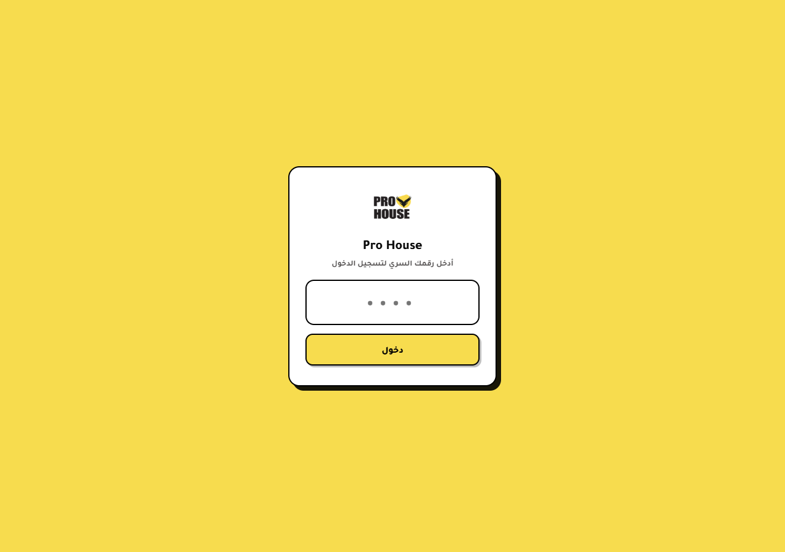
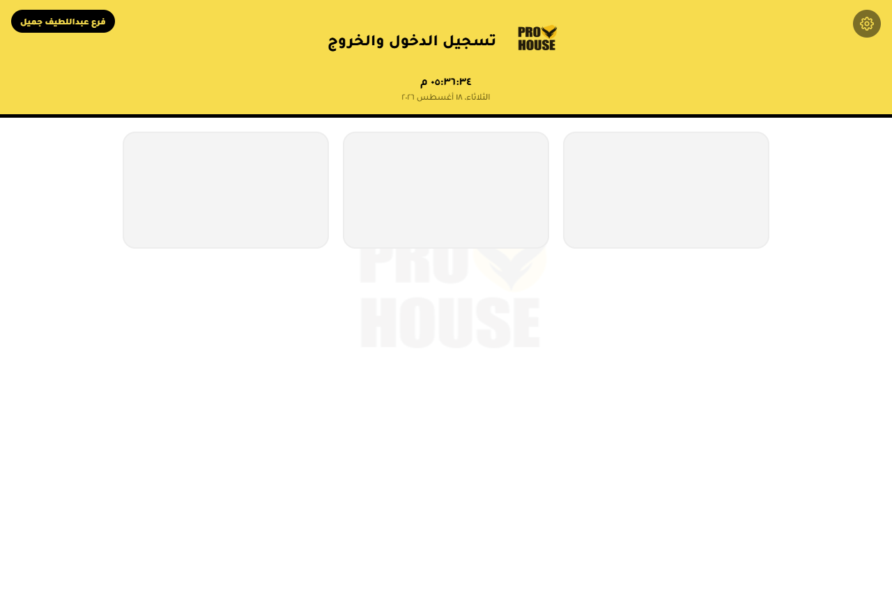
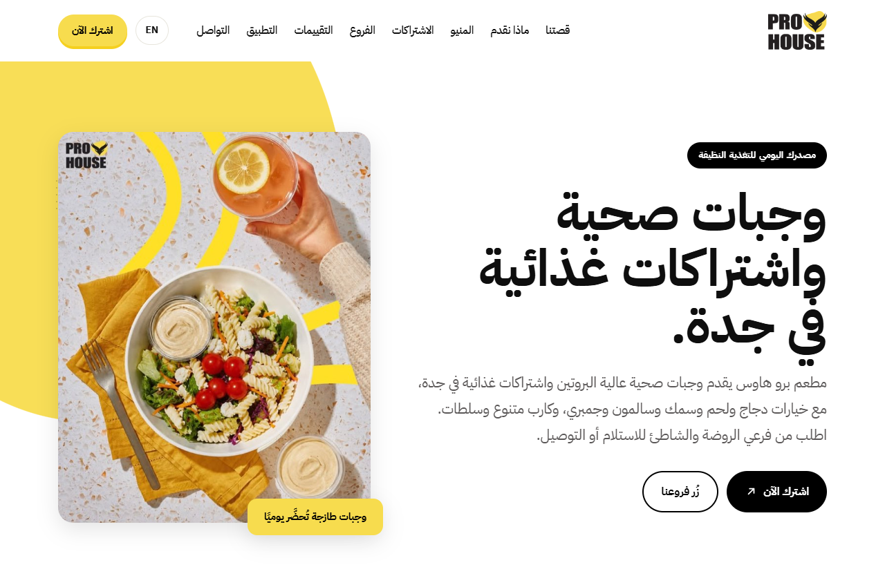
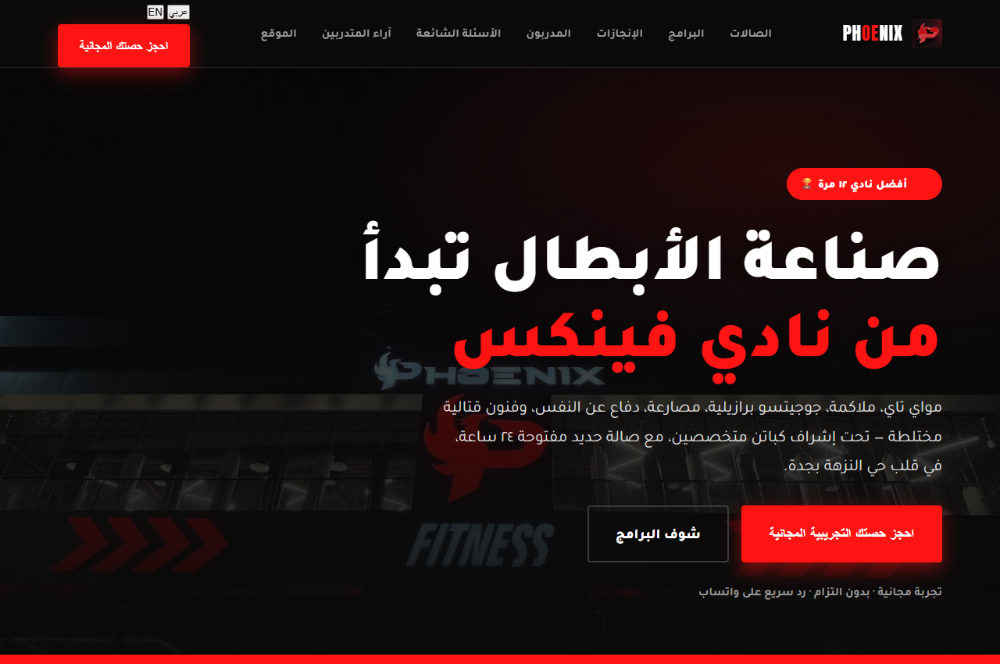

ما الذي أقدمه
4 مجالات رئيسية تجمع بين الإشراف الميداني، الهندسة الإجرائية، والحلول الرقمية
1. تشغيل المطاعم
إشراف ميداني على الفروع، متابعة استلام إنتاج المطبخ المركزي بالوزن الفعلي، حصر الهدر والمخزون، وضبط جودة الخدمة اليومية.
2. تطوير المشاريع
معالجة المعوقات التشغيلية، تصميم ورسم مسارات العمل (Workflows)، وتحويل الفجوات الميدانية إلى إجراءات منظمة ومستدامة.
3. الأنظمة الرقمية والأتمتة
بناء أنظمة تشغيلية كود مخصص (PWA)، أتمتة بيانات الكاشير (POS)، وتوليد تقارير دورية آليّة ودقيقة للإدارة.
4. التسويق والتجارة الإلكترونية
تأسيس المتاجر الإلكترونية، إدارة تطبيقات التوصيل والاشتراكات، وصناعة محتوى إعلاني (UGC) موجه بالمبيعات.
الأعمال والمشاريع المميزة
أنظمة تشغيلية حية، مواقع كود مخصص، ومتاجر إلكترونية مُنجزة

نظام تسجيل الحضور والانصراف (Kiosk)
شغّال
كشك رقمي يسجل خروج وعودة الموظفين للبريكات على جهاز الكاشير والجوال. يعتمد وقت ساعة السيرفر لحظة الضغط لمنع التلاعب بالوقت، ويتمتع بخاصية العمل أوفلاين مع المزامنة التلقائية فور عودة الاتصال.
موقع برو هاوس الرسمي (prohouse.sa)
كود مخصص
تطوير وتأسيس الموقع الإلكتروني الرسمي للمطعم كود مخصص بدون استخدام قوالب لضمان الأداء السريع والتحكم المطلق بـ SEO والتحليلات.
موقع نادي فينكس (Phoenix MMA)
منهجية بحث
تطوير منصة لنادي فنون قتالية مبنية على منهجية البحث الموثق: ربط كل معلومة ومدرب بمصدر موثوق لضمان دقة البيانات المنشورة.
المشاريع الرقمية والأعمال المساندة
أميزنج كار (عمل جانبي)
عمل جانبيبناء متجر سلة ومتابعة الحملات التسويقية والمبيعات لمستلزمات السيارات.
@amazingcar.1 ↗سرفايف (مشروع شخصي)
مشروعيتأسيس مشروع وجبات صحية منزلية محسوبة السعرات، بناء منيو شامل وإدارة الاشتراكات.
شموخ للتمور
سلةتأسيس وبناء المتجر الإلكتروني على منصة سلة لعلامة تمور فاخرة.
تريند زون (مشروع شخصي)
مشروعيتأسيس وتشغيل متجر إلكتروني للمنتجات المنزلية وخوض تجربة إدارية متكاملة.
🎬 صناعة المحتوى الإعلاني الـ UGC (7 علامات · 16 مقطع)
6 قطاعاتالتعاون مع 7 علامات تجارية بـ 6 قطاعات متنوعة (أغذية، سيارات، ذهب، تمور، أجهزة أمنية، وكالة تسويق).
- برو هاوس @prohouse.sa
- أميزنج كار @amazingcar.1
- مجوهرات روبي @rubyjewelry2
- ريونيك @reunique.co
- شموخ للتمور @shumukhdates
- سمارت ديجيتال @smartdigitalksa
- وكالة بي هايف @beehiveagency.sa
التسلسل الزمني للخبرات
مسيرة تدرجت من المهام الميدانية إلى قيادة وتطوير عمليات الفروع والمشاريع
-
11/2025 – الآن
مساعد مشرف عام — مطعم برو هاوس (3 فروع)
الإشراف الميداني الفعلي على 3 فروع، إدارة تطبيقات التوصيل والاشتراكات، متابعة استلام إنتاج المطبخ بالوزن، حصر الهدر والمخزون، وتطوير النظام التشغيلي والموقع الرسمي.
-
11/2024 – 11/2025
أورنج بيد آند باث — من المستودع إلى تشغيل الموقع والإشراف
البداية بالتحضير والشحن بالمستودع، ثم الانتقال للمكتب الرئيسي: تشغيل وتتبع الطلبات والإشراف على قسم الميديا.
-
11/2024 – 04/2025
أميزنج كار (عمل جانبي) — بناء المتجر والتسويق
تأسيس متجر سلة وتشغيل العمليات التسويقية ومتابعة المبيعات (عمل جانبي مع صديق).
-
02/2024 – 11/2024
سرفايف (مشروع شخصي) — وجبات صحية واشتراكات
إعداد منيو وجبات صحية محسوبة السعرات وتوفير خدمة اشتراكات متكاملة من البيت.
-
07/2022 – 09/2022
سميت طرابزون — مخبوزات وخدمة عملاء
خبز المخبوزات والتعامل المباشر مع الزباين على أرض الصالة.
-
08/2021 – 12/2021
رويال ستيم — غسيل، خدمة عملاء وإشراف
البداية في الغسيل والتلميع، ثم الترقية لخدمة العملاء والإشراف على الموظفين.
-
02/2021 – 05/2021
مودي شيك / عالم الأوائل — خدمة عملاء وتجهيز طلبات
خدمة العملاء والتواصل المباشر، وتجهيز وشحن الطلبات اليومية.
المهارات والقدرات
مجمّعة في 4 مجالات رئيسية بدون إطالة نصية
لنعمل معاً
متاح لفرص في تشغيل المطاعم، تطوير المشاريع والعمليات.